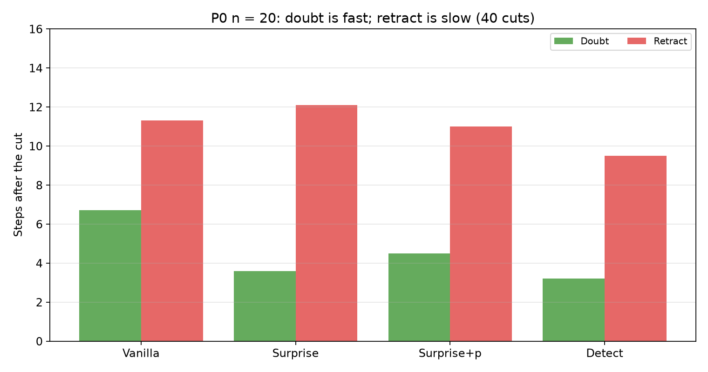
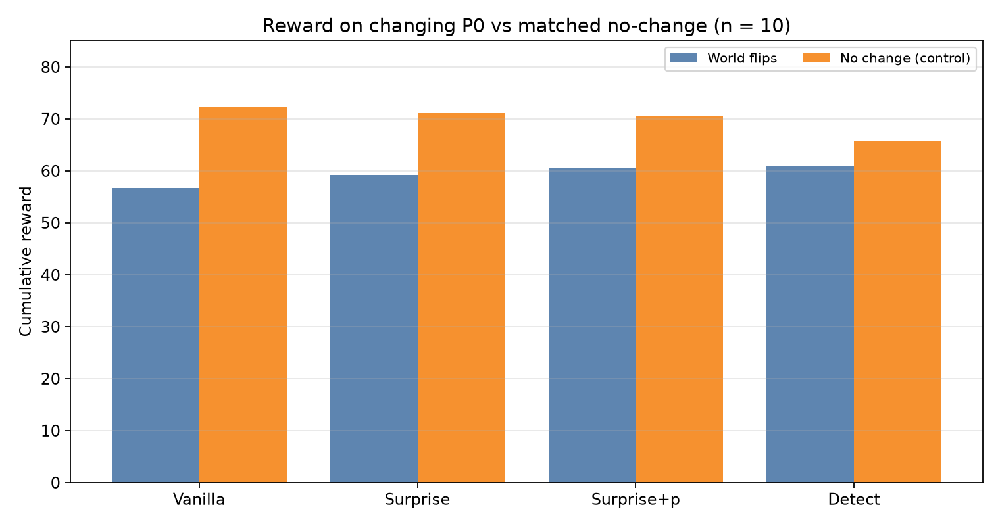
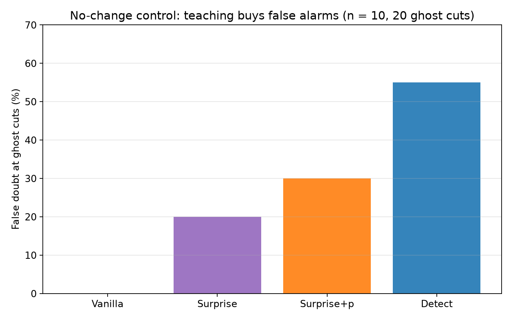
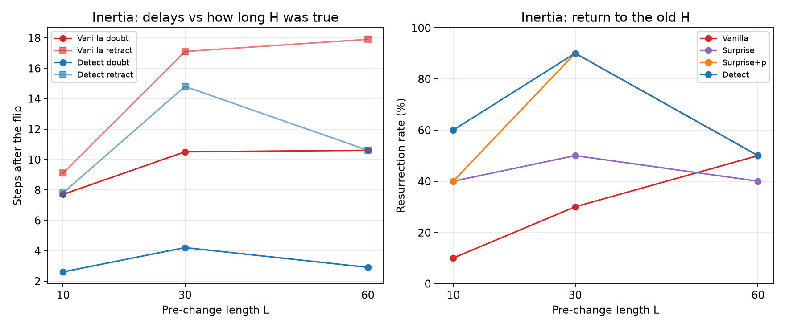
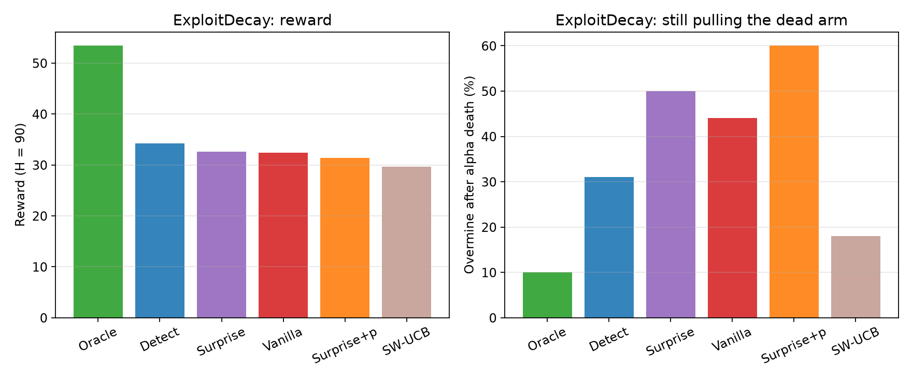

Date: 3 September 2026
Follows: 24 Aug group meeting
Model: frozen Gemini 3.5 Flash, T = 0, blind task text
A frozen LLM will form an H and get nervous when the data sour. Unless you install a recency cookbook, it often talks itself back onto the old H because n is large — and that is what it then pulls.
Teaching recency helps whenever “recent mean died” is the right local statistic (P0 flips and mining an arm to death). It hurts when the world did not change. It is not a general revision loop. We do not have a prompt that beats vanilla on both a changing world and a still one.
Last week: can they form H, assign confidence, and adapt on a toy non-stationary bandit?
This week:
How do belief revision and behavioural adaptation interact when the world stops satisfying the previous hypothesis?
That required splitting “falsify” into doubt vs durable retract, adding a no-change control, measuring inertia (how long H was true), and transferring to ExploitDecay (you kill the arm by pulling it).
Same JSON every step: {hypothesis: {best_arm, stable}, confidence, heuristic, action}.
Four prompts, unchanged:
| Name | Instruction |
|---|---|
| Vanilla | Schema only |
| Surprise | H is a model; drop it if recent pulls are surprising |
| Surprise + p-value | Same + engine binomial tail |
| Detect | Prefer last-10 mean; collapse ⇒ stable=false; do not restore from large n |
Doubt = first stable=false or declared best ≠ old best.
Retract = first 3 consecutive steps off the old H.
Resurrect = return to the old H after leaving it.

Figure 1. Mean steps after a cut (40 events). Surprise is fastest to doubt and among the slowest to stay off. Detect is fastest on both, still not fast on retract.
| Doubt | Retract | Gap | Resurrect | Pull old while declaring new | |
|---|---|---|---|---|---|
| Vanilla | 6.7 | 11.3 | 4.5 | 68% | ~0 |
| Surprise | 3.6 | 12.1 | 8.5 | 45% | 0.02 |
| Surprise + p | 4.5 | 11.0 | 6.5 | 55% | 0.01 |
| Detect | 3.2 | 9.5 | 6.2 | 45% | 0.01 |
Belief–action consistency is high (~0.8). They pull what they declare. Failure is putting the old H back on, not secretly milking a corpse. Once they really retract, search onto the new arm is short (~1 step).
Cuts are now random. Control: same seeds, same ghost times, best arm never flips. False doubt at a ghost cut is a false revision.

Figure 2. Blue = world flips. Orange = nothing flips. Every addition helps (a bit) on the left and hurts on the right. Detect’s control penalty is larger than its change gain.

Figure 3. Vanilla never flinches on noise. Detect false-doubts 55% of ghost cuts. Nobody false-retracts a true H. The leak is twitchy exploration.
If change and no-change are mixed 50/50:
| Mean of the two worlds | |
|---|---|
| Vanilla | 64.5 |
| Surprise | 65.2 |
| Surprise + p | 65.4 |
| Detect | 63.3 |
Detect loses the average. Surprise/p-value do not Pareto-dominate vanilla (they still lose on the control). Vanilla is already near oracle (~76) when nothing changes (72.3). Room to beat it there is tiny.
This is not a worse prior on p. It is P(the world just changed | a few zeros) set too high.

Figure 4. Left: doubt/retract vs how long H was true. Right: resurrection. Vanilla (red) is the clean curve. Taught prompts still doubt fast; resurrection is noisy at n = 10.
Vanilla
| L | Doubt | Retract | Policy leaves old | Resurrect |
|---|---|---|---|---|
| 10 | 7.7 | 9.1 | 4.3 | 10% |
| 30 | 10.5 | 17.1 | 8.9 | 30% |
| 60 | 10.6 | 17.9 | 10.0 | 50% |
At short L the policy moves before H. At long L they couple and stick. Retract saturates after L=30; resurrection keeps climbing.
Taught prompts: doubt stays ~3–5 at every L. Resurrection is not a monotone L-curve at n=10 (detect 60% / 90% / 50%). Teaching buys fast doubt, not proven immunity to bringing H back.
Pulling the current winner lowers its p; when it dies a new alpha spawns. Same four prompts, n=10, blind.

Figure 5. Detect is the only LLM that beats vanilla and cuts overmining. Surprise and p-value overmine more than vanilla. SW-UCB overmines least and scores worse (leaves too early).
| Reward | Overmine | Doubt | Retract | Resurrect | |
|---|---|---|---|---|---|
| Oracle | 53.4 | 10% | — | — | — |
| Detect | 34.2 | 31% | 2.7 | 5.8 | 53% |
| Surprise | 32.6 | 50% | 3.6 | 8.4 | 54% |
| Vanilla | 32.4 | 44% | 5.2 | 7.0 | 40% |
| Surprise + p | 31.4 | 60% | 6.8 | 9.5 | 40% |
| SW-UCB | 29.7 | 18% | — | — | — |
Detect transfers because recency collapse is the right local cue both when an arm is swapped and when you mine it to death. That is a cookbook win, not a revision win. Generic surprise still doubts, then milks the dead alpha.
One sentence. They form an H and get nervous when the data sour; unless you hand them a recency cookbook, n talks them back onto the old H — and that is what they pull.
| Experiment | Configs / analyze |
|---|---|
| n=20 P0 four prompts | experiment_p0_hypothesis_n20_*.yaml, analyze_hypothesis_teach.py |
| Revision on those traces | scripts/analyze_revision.py |
| Random cut + control | experiment_p0_revision_{change,control}_*.yaml, analyze_revision_protocol.py |
| Inertia L=10/30/60 | experiment_p0_inertia_L*_*.yaml, analyze_inertia.py |
| ExploitDecay hyp | experiment_exploit_decay_hyp_*.yaml, analyze_exploit_decay_hyp.py |
| This week’s log | revision_inertia_2026-09.md |